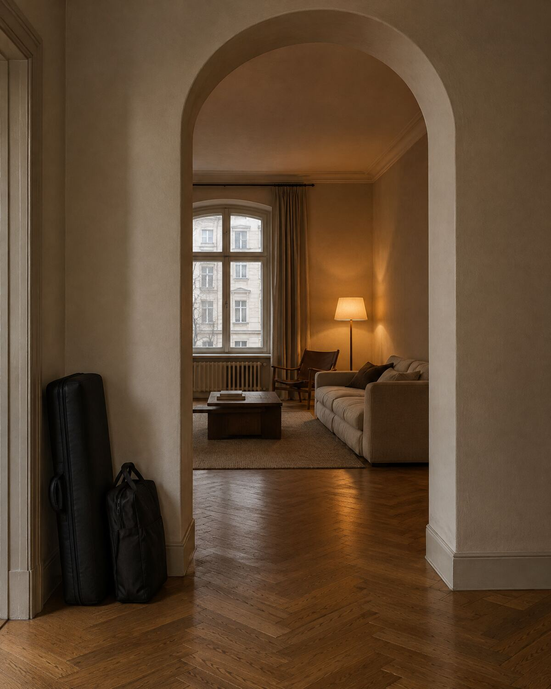

Jede Bewegung endet still: ease-out, kein Überschwingen, keine Schleife. Token in DESIGN_TOKENS; Regeln in brand/applications/motion/MOTION.md.

Flur · Berlin-Schöneberg · 18:40
1 · Bogen-Aufgang. Maske öffnet von unten (640 ms, arrive), Bogen steigt 16 px, Foto setzt sich von 1,04 auf 1 (900 ms, settle). Ortszeile folgt nach 480 ms.2 · Das Zeichen zeichnet sich. Die O-Kontur zieht (640 ms), die S-Kontur folgt ab 320 ms, dann erscheinen Ring und S als Fläche (220 ms) und die Linie geht. Nur Splash und Endframes; nie als Ladeanimation, nie in Schleife.
Your body. Your place.
3 · Wortmarke. Die ganze Marke kommt als eine Form (480 ms, 8 px), die Linie wächst, die Tagline folgt mit 320 ms Versatz. Nie Buchstabe für Buchstabe, nie gemorpht.